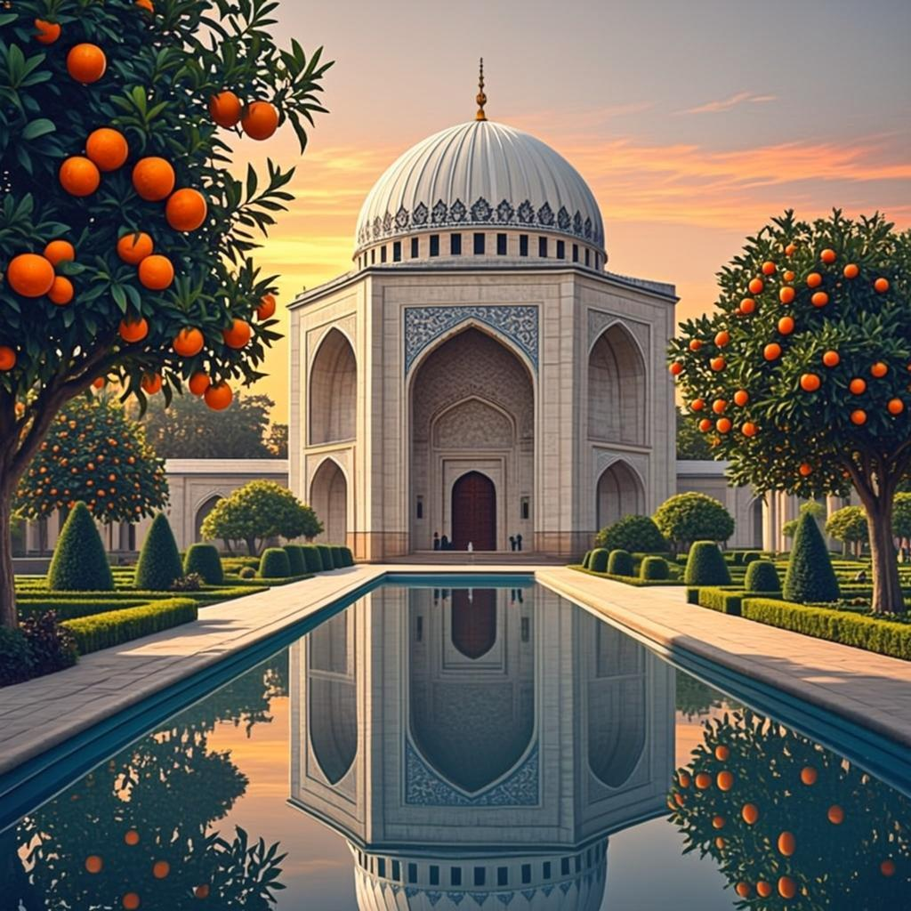

کتاب فارسی پایه نهم · E01
حل فعالیتهای کامل
حل فعالیتهای فارسی نهم — فصل ۱: زیبایی آفرینش
پاسخ پیشنهادی ارزشیابی درس ۱ و ۲، حکایت سفر و شعرخوانی — به سبک کتاب

این جزوه، فعالیتها و تمرینهای حل فعالیتهای فارسی نهم — فصل ۱: زیبایی آفرینش را به ترتیب کتاب درسی پاسخ میدهد: صورت سؤال مطابق کتاب، پاسخ تشریحی گامبهگام و کادرهای نکتهٔ نمرهآوری.